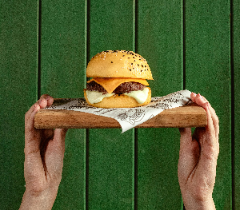
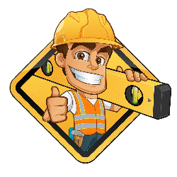

Luis Camargos


Quem sou eu...
Me chamo Luis Gabriel, tenho 23 anos
e formado em Gestão de Tecnologia da informação;
Estou na área da tecnologia há um pouco mais de 3 anos, onde
despertei minha curiosidade pela área de criação de sites
onde pude ter uma noção muito maior do que é ser um programador
Quando comecei os cursos, me empenhei muito nas linguagens
C++ e Phyton, porém depois de um tempo por indicações, me interessei pelas
funções de java script, onde alem de eu me identifcar, é
uma linguagem que o mundo usa, grandes sites e grandes
programadores usam essa linguagem, e claro, é minha preferida!
Meus Projetos

HAMBURGUERIA CAMARGOS
Desde sempre tive esse interesse por montar e criar
sites, mas com a escola e trabalho ficava um pouco
cansativo. Terminei a escola e fiquei com mais interesse,
até que chegou o dia em que resolvi fazer cursos voltados
a criar sites.
HAMBURGUERIA CAMARGOS foi criada para um projeto futuro, onde
conta a história da nossa familia em forma de lanches, cada um
com seu gosto em específico e suas particularidades.
Desde sempre tive esse interesse por montar e criar
sites, mas com a escola e trabalho ficava um pouco
cansativo. Terminei a escola e fiquei com mais interesse,
até que chegou o dia em que resolvi fazer cursos voltados
a criar sites.
HAMBURGUERIA CAMARGOS foi criada para um projeto futuro, onde
conta a história da nossa familia em forma de lanches, cada um
com seu gosto em específico e suas particularidades.
ENCEFALOPATICA HEPÁTICA
Projeto criado para um trabalho de faculdade,
no qual seria um site informativo e preventivo
onde tem a intenção de falar sobre essa doença
que atinge varios animais, porém mais específico
em cães.
Projeto criado para um trabalho de faculdade,
no qual seria um site informativo e preventivo
onde tem a intenção de falar sobre essa doença
que atinge varios animais, porém mais específico
em cães.

ELIAS - MONTADOR DE MÓVEIS
Projeto feito com o intuito de mostrar os serviços.
do meu cliente, onde ele trabalha como montador de moveis.
No site você tera acesso á simulação e contato com o mesmo
com muito mais facilidade, além de informações e avaliações
sobre os trabalhos que ele concluiu.
Projeto feito com o intuito de mostrar os serviços.
do meu cliente, onde ele trabalha como montador de moveis.
No site você tera acesso á simulação e contato com o mesmo
com muito mais facilidade, além de informações e avaliações
sobre os trabalhos que ele concluiu.
MEU PORTFÓLIO
Esse Portfólio foi feito por mim
através da linguagem JavaScript, porém
a maioria das partes foram feitas com o CSS
Espero que com ele eu consiga mostrar um pouco
do que posso fazer nessa área que é tão vasta e linda.
MEU PORTFÓLIO
Esse Portfólio foi feito por mimatravés da linguagem JavaScript, porém
a maioria das partes foram feitas com o CSS
Espero que com ele eu consiga mostrar um pouco
do que posso fazer nessa área que é tão vasta e linda.
 Displasia Coxofemoral
Displasia Coxofemoral
Site criado através de pesquisas e informaçoes para
explicar um pouco sobre a doença, sobre o tratamento
e oque
pode acontecer para que seu cão sofra menos utilizando
informações encontradas no site.
Site criado através de pesquisas e informaçoes para
explicar um pouco sobre a doença, sobre o tratamento
e oque pode acontecer para que seu cão sofra menos utilizando
informações encontradas no site.
Minhas Habilidadess